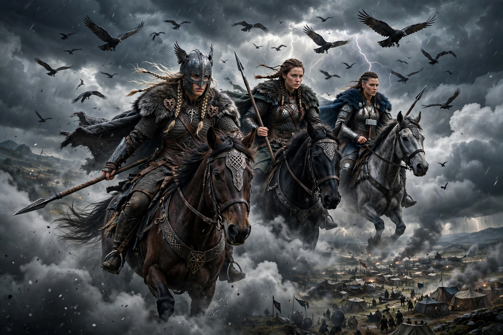

From Wikipedia, the free encyclopedia
| Valkyries | |
|---|---|
| Affiliation | Norse mythology; female choosers of the slain in Odin's service |
| Old Norse | valkyrja — 'chooser of the slain' |
| Role | Select the battle-dead for Valhalla; serve mead to the einherjar |
| Famous valkyries | Brynhildr, Sigrún, Göndul, Hildr |
| Later imagery | Armoured women on winged horses (Romantic-era development) |

In Norse mythology, a valkyrie (Old Norse valkyrja, "chooser of the slain") is one of a company of female figures who serve Odin, deciding the fates of battles and conducting the chosen dead to Valhalla, where the fallen heroes — the einherjar — train for Ragnarök. In Valhalla the valkyries also serve the heroes mead. Their names, preserved in the Eddas' lists, are kennings of battle itself: Göndul (wand-wielder), Skögul (shaker), Hildr (battle), Gunnr (war). The winged helmets and swan-forms of later art mix genuine motifs — valkyries do ride through sky and sea in the poems, and swan-maidens appear in the legendary sagas — with nineteenth-century Romantic staging, above all Wagner's.
Eddic valkyries are formidable and ambiguous: they weave the web of war with entrails for warp and heads for weights (Darraðarljóð), ride to determine victory, and fall in love with mortal heroes, defying Odin at their peril. Sigrdrífa — identified with Brynhildr — is pricked by Odin's sleep-thorn for giving victory against his will, and wakes to teach Sigurd the runes of victory, ale, birth and love. The valkyrie lays down (or is forced from) her office by marriage: Brynhildr, Sigrún and the swan-maidens of Völundarkviða all pass from Odin's service into the heroic tragedies of the Völsung cycle.
The "Ride of the Valkyries" from Wagner's Die Walküre (1870) fixed their modern image — and lent its name, via Apocalypse Now (1979), to a cultural shorthand for martial exultation. Operation Valkyrie, the 1944 plot against Hitler, borrowed the name for its contingency plan. In archaeology, small female figures with cups from Viking Age graves are often interpreted as valkyries welcoming the dead — evidence, many argue, that the belief was lived, not merely sung.
Norse mythology · Odin · Freyja · Baldr · Hel